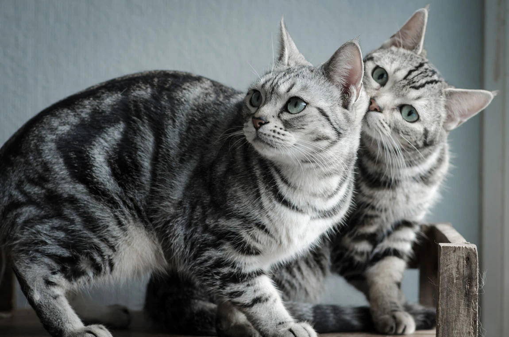
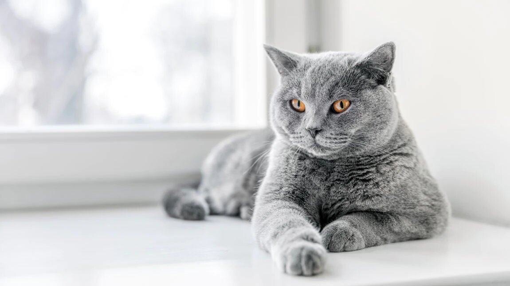
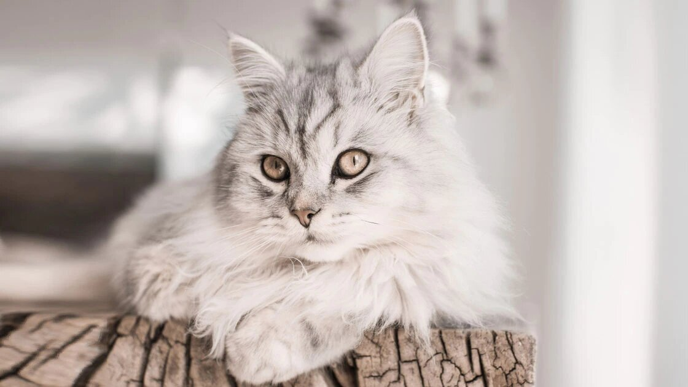
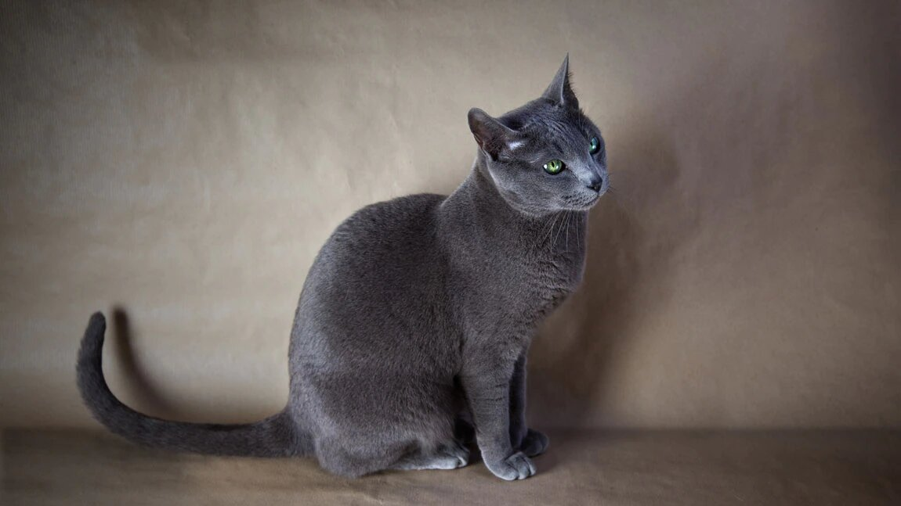
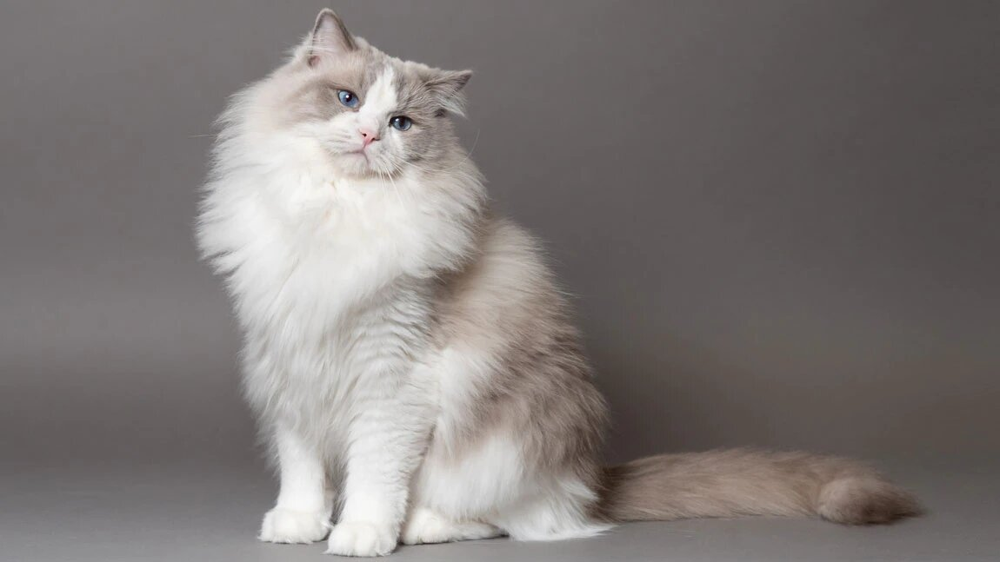
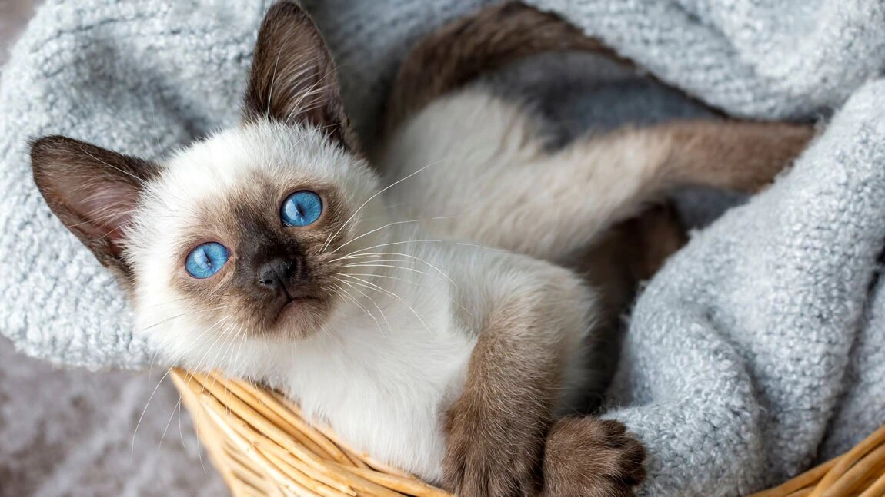
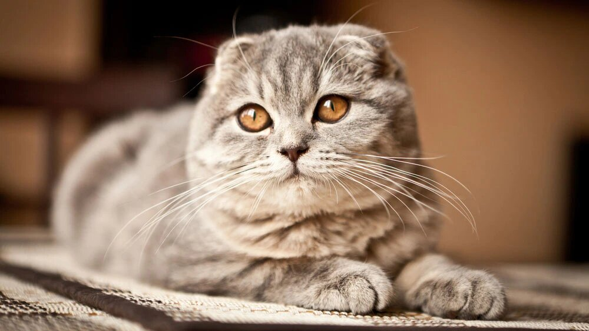

Это страница про кошку
Ко́шка — домашнее животное, одно из наиболее популярных «животных-компаньонов». С точки зрения научной систематики, домашняя кошка — млекопитающее семейства кошачьих отряда хищных. Одни исследователи рассматривают домашнюю кошку как подвид дикой кошки, другие — как отдельный биологический вид.
- Американская короткошёрстная кошка
Несмотря на название, история этой породы берёт начало в Европе. В эпоху колонизации Северной Америки европейцы везли на кораблях кошек, чтобы те охотились на крыс во время путешествия. Эти питомцы высадились в Новом Свете и стали развиваться в соответствии с новым климатом и условиями жизни. В начале XX века началась их селекция с целью развить лучшие качества породы. Сегодня она имеет очень высокие стандарты. Американская короткошёрстная кошка имеет внешние черты своих предков-охотников, милую мордочку, лоснящуюся шерсть и игривый, но независимый характер. На фото можно заметить, что среди котов и кошек распространён мраморный окрас. Они спокойны, добродушны и хорошо ладят с детьми. Это активные кошечки, которым очень интересен внешний мир. Несмотря на то что им важно находиться в обществе людей, они известны своей независимостью. Хорошо уживаются с другими питомцами, отличаются крепким здоровьем и долголетием.
 - Бирманская кошка
Красивый пушистый кот с сапфировыми глазами, густой шерстью и белыми лапками — это описание бирманца. История его происхождения овеяна красивыми легендами. До сих пор неизвестно, какие животные были родоначальниками. На фото видно, что по окрасу бирманец похож на сиама, но по характеру — его полная противоположность. Спокойные, любознательные животные не стесняются выражать свою любовь к хозяевам и в то же время, как истинные аристократы, не будут навязывать своё общество, если люди заняты и не могут уделить им внимания. У бирманцев есть интересная особенность окраса — на тёмных лапах чётко очерчены линии белых туфелек. Их отсутствие считается дефектом и не позволяет признать кошку породистой. Классическое сочетание цветов окраса — светло-бежевый и шоколадно-коричневый. Красивая и густая пушистая шерсть — гордость бирманских котов, но людям, страдающим аллергией, лучше выбрать другого питомца. Жизнь в одном доме с таким животным может стать причиной серьёзных проблем со здоровьем. Если медицинских противопоказаний нет, то бирманец непременно станет любимцем всей семьи. Однако оставлять с ним маленьких детей нежелательно. Несмотря на доброту и спокойный нрав, они вполне могут выпустить когти, если ребёнок будет слишком настойчиво вовлекать их в свои игры.

- Британская короткошёрстная кошка
Британцы — чистокровные аристократы. Эти коты появились в XIX веке и к настоящему времени породные стандарты ни разу не менялись. «Плюшевая» кошечка с массивной головой и красивыми толстыми щёчками — одна из самых любимых и распространённых в мире. Практически любой узнает такого котика по фото. Фаворитом среди собратьев её делают прекрасные манеры и выразительная внешность. Есть один нюанс, с которым нужно считаться, отдавая предпочтение британцам. Эти красивые кошки хоть и неприхотливы, но совершенно равнодушны к дрессировке. Максимум, на что они способны, — научиться ходить в туалет на лоток и отдать предпочтение когтеточке, а не дивану. Содержание домашнего питомца не доставляет особых хлопот: нужно следить за питанием, так как британцы склонны к набору веса, и один раз в неделю вычёсывать шерсть, чтобы она всегда выглядела красивой и ухоженной.
 - Манчкин
В 1991 году эти красивые коротконогие котики с бархатистой плотной шубкой, представленные на выставке в Мэдисон Сквер Гарден, потерпели полное фиаско. Карликовый рост посчитали дефектом, но после того как учёными было доказано, что короткие ноги — это естественный генетический признак, порода манчкин была признана официально. Сегодня она очень популярна и легко узнаётся по фото. Милые котята манчкинов способны растопить сердце любого. Взрослые особи демонстрируют отменное здоровье на протяжении всей жизни, а живут они 15—16 лет. Интересные и необычные манчкины — прекрасные модели для эффектных фотосессий. Особый интерес вызывают коты с шерстью цвета шоколада. Окрас трёхцветных манчкинов полностью лишён какой-либо симметрии, но на их очарование подобный «диссонанс» никак не повлиял.

- Норвежская лесная кошка
Представителей этой породы можно узнать по внушительным размерам, пушистой шерсти и характерному воротнику вокруг шеи. Последние два признака хорошо видны на фото. Во внешности сочетаются черты дикого лесного кота и домашнего животного: густая шерсть, чтобы спасаться от холода, атлетическое сложение и сильные когти, чтобы охотиться, умный внимательный взгляд. Они уравновешены и рассудительны, как настоящие северные жители. История возникновения породы связана с разными легендами, в каждой из которых прародителями «норвежца» выступает ангорская кошка, мейн-кун или азиатский перс. Возможно, в каждой из них есть доля правды, ведь в интересной внешности норвежского лесного котика действительно угадываются черты всех этих пород. Вариантов расцветок масса — и классические однотонные, и разнообразные вариации оттенков и узоров: дымчатые, мраморные, пятнистые. Часто встречается красивый и интересный окрас табби — с чёрно-рыжими полосами. Норвежские коты толерантны и уравновешены, поэтому живут в согласии не только со своими хозяевами, но и с другими питомцами. Если не заставлять их делать то, чего они категорически не хотят, дружба на всю жизнь обеспечена.
 - Русская голубая кошка
Фаворитка русских императоров отличается роскошными внешними данными и кротким характером. Красивый серебристо-голубой окрас, из-за которого порода и получила такое название, глаза цвета изумруда или нефрита, грациозная походка — животное физически отлично развито, однако выглядит очень аккуратно и даже изящно. На фото можно заметить, что шерсть у таких котиков короткая. Русская красавица, только переступив порог дома, становится предметом обожания его жителей. Мягкий характер не позволяет этим котикам хоть как-то показывать своё недовольство поведением хозяев. Они терпеливы по отношению к шумным, заигравшимся детям, стойко переносят одиночество, готовы стерпеть всё, кроме антисанитарии в доме, а также в своей миске и лотке. Чтобы питомец выглядел ухоженным, ей надо обеспечить качественное питание и тщательный уход за шерстью. Мытьё водой она не очень любит, для чистки её шубки лучше использовать специальные сухие салфетки.
 - Регдолл
Если бы не живой взгляд и игривость, рэгдолла легко можно было принять за дорогую мягкую игрушку. На фото видны все признаки этих котов: ярко голубые глаза, шелковистая длинная шерсть (растёт также между пальчиками на лапках), интересные «воротничок» и «штанишки». Природа сотворила такое красивое животное, что им просто нельзя не восхищаться. У рэгдолла интересные цвета окраса: лиловый, голубой, шоколадный. Оттенки варьируются в разных комбинациях. Неудивительно, что котики с такой внешностью прекрасно живут в семье, становятся верными друзьями на всю жизнь. Дети часто рассматривают кошку породы рэгдолл как безмолвную игрушку. Чтобы животное не нервничало, лучше сразу объяснить деткам, что оно не потерпит неуважительного отношения.
 - Сиамская кашка
Сиама легко узнать по фото. Большие ярко-голубые глаза интересного оттенка, подтянутое грациозное тело, тёмная «маска» на круглой мордочке — элегантные, загадочные и красивые, они способны вызвать у некоторых тревогу. Считается, что у сиамских котов трудный характер. На самом деле они могут быть ласковыми и послушными, но только в том случае, если чувствуют искреннюю любовь. «Аристократы» кошачьего мира сами выбирают себе хозяев, не терпят принуждения, агрессии. Их поведение — это отражение отношения хозяев к домашнему питомцу. Сиамы очень злопамятны и ревнивы. Однажды почувствовав измену, они долго не забудут обиды.
 - Шотланская вислоухая кошка
«Шотландец» — одна из самых молодых пород, но очень популярных и легко узнаваемых по фото. Широко расставленные, круглые как блюдца глаза гипнотизируют и умиляют. «Фирменный» взгляд Scottish Fold очень часто обыгрывается в мультипликационных бестселлерах. Беззащитное очаровательное существо с загнутыми ушками и мягкой, как велюр, шерстью просто невозможно не полюбить с первого взгляда. «Шотландцы» добры и чистоплотны от природы, отличаются умом и сообразительностью, прекрасно ладят с детьми, поэтому легко приживаются в новом доме. Главным условием соблюдения стандарта породы является соответствие оттенка глаз окрасу. У белых кошечек они должны быть синими или золотистыми, у чёрных и дымчато-чёрных — только золотистыми. Подушечки лап тоже должны соответствовать общей цветовой гамме: у «блондинов» они розовые, а у «брюнетов» — чёрные. У «шотландцев» есть несколько интересных черт. Если кот стоит столбиком (как сурок) — это не результат дрессировки, а «зарядка», которую он делает, чтобы расслаблять позвоночник. Scottish Fold любят спать на спине, а вместо мурлыканья издают странные скрипучие звуки.
